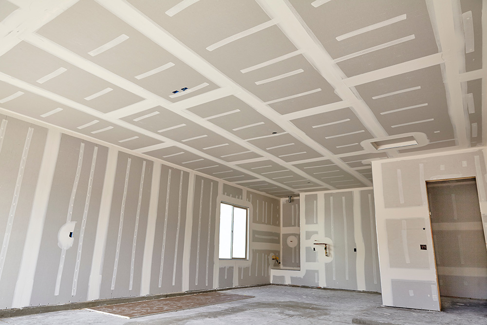
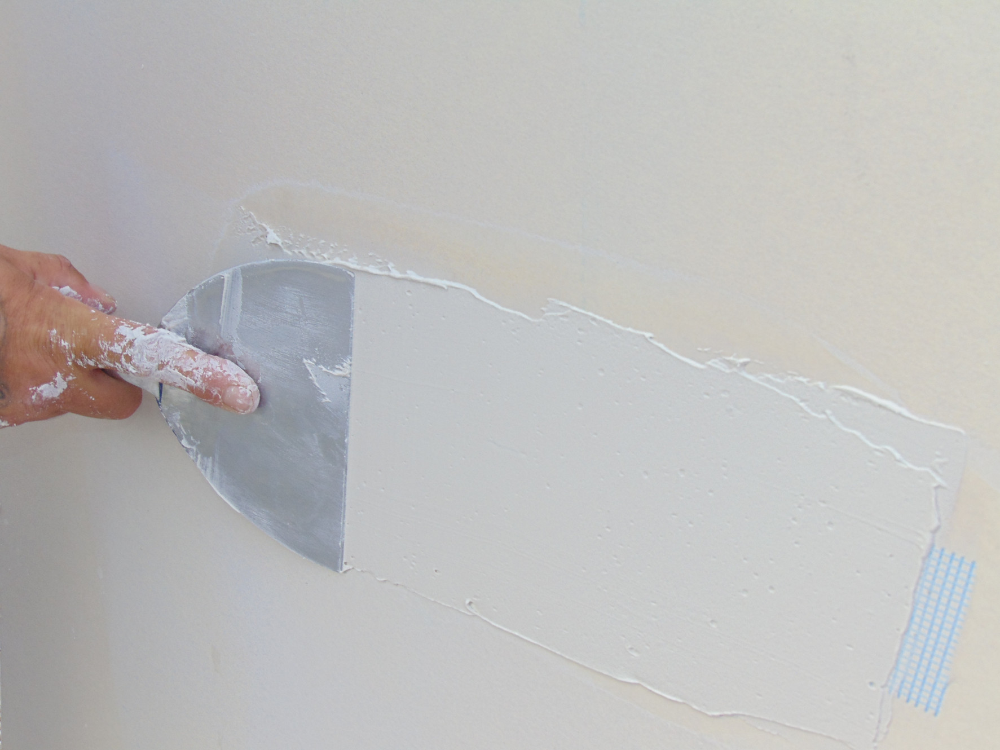

Sheetrock hanging
Professional drywall hanging for homes, commercial spaces, garages, additions, and interior build-outs.
Residential & commercial sheetrock service
Pulliam Sheetrock Service delivers expert hanging, finishing, and repair work throughout Tippah County, Alcorn County, and North Mississippi with 10+ years of hands-on experience.
New builds, remodels, additions, patching, and room-by-room repairs.
Office interiors, tenant build-outs, retail spaces, and larger framing runs.
Direct communication, clear scheduling, and craftsmanship that lasts.
Core services
Whether you need complete sheetrock installation or precise drywall repair in Tippah County, Alcorn County, or anywhere across North Mississippi, Pulliam Sheetrock Service keeps the work moving with clean execution and a professional finish.
Professional drywall hanging for homes, commercial spaces, garages, additions, and interior build-outs.
Taping, mudding, sanding, corner detail, and finishing work that leaves walls and ceilings ready for paint.
Cracks, holes, water-damaged areas, remodel tie-ins, and repair work that blends into the surrounding surface.
Work examples
From open residential interiors to large commercial ceilings and detailed finishing work, see the range of sheetrock projects we handle across Tippah County, Alcorn County, and North Mississippi.

Open rooms, remodels, additions, garages, and new construction sheetrock installation.

Large ceilings, clean wall runs, and dependable finishing for business and contractor schedules.

Precision corner work, seam finishing, patching, and touch-up jobs that need a clean final look.
Service area
Pulliam Sheetrock Service handles jobs across Tippah County, Alcorn County, Benton County, DeSoto County, Oxford, Prentiss County, Corinth, Pickwick, Tupelo, New Albany, and nearby communities throughout North MS and Southwest TN.
Fast response for local and regional jobs.
Why homeowners and builders call
10+ years of experience means clean workflows, stronger finishes, and fewer callbacks.
From small patch repairs to full residential builds and large commercial projects, no job is too big or too small.
Based in the heart of North Mississippi and proud to serve Tippah County, Alcorn County, and surrounding communities.
Frequently asked questions
Pulliam Sheetrock Service handles sheetrock hanging, finishing, and repairs for residential and commercial spaces, from single-room repairs to larger interior projects.
Yes. No job is too large or too small. We handle smaller drywall repairs and finishing corrections right alongside full installs.
We serve Tippah County, Alcorn County, Benton County, DeSoto County, Oxford, Prentiss County, Corinth, Pickwick, Tupelo, New Albany, and communities throughout North Mississippi and Southwest Tennessee.
Call Manse Pulliam at 901-651-0234 or send details by email to pulliamsheetrock@gmail.com.
Ready to talk about your job?
If you need professional sheetrock hanging, finishing, or repairs in Tippah County, Alcorn County, or anywhere across North Mississippi, call or email for a free estimate.